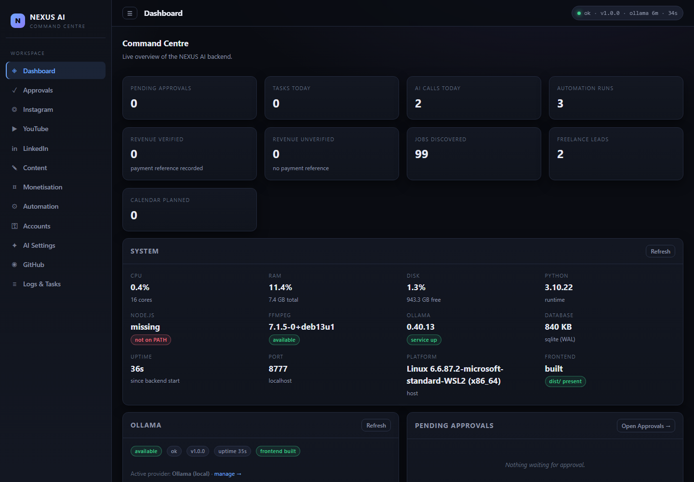
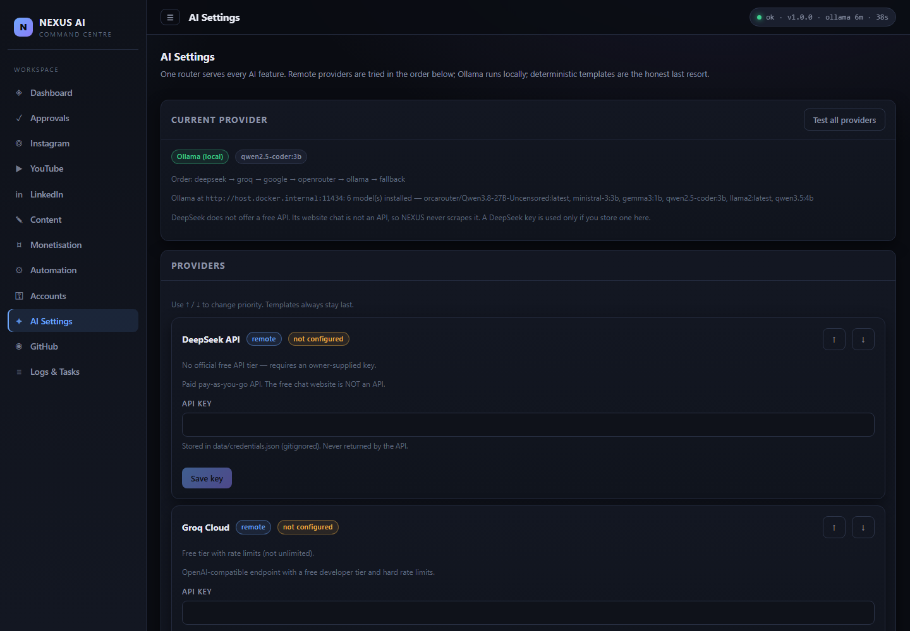
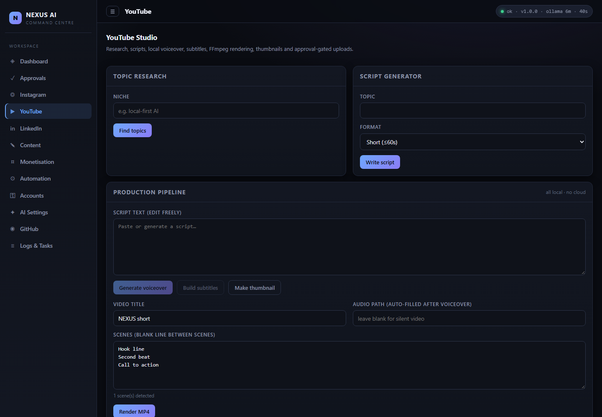
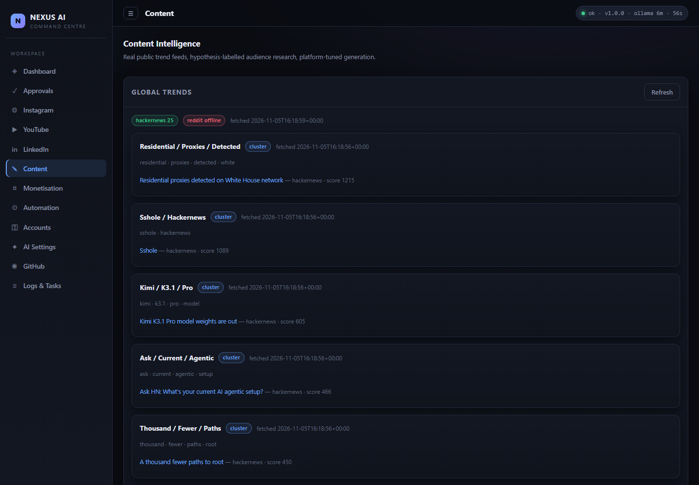
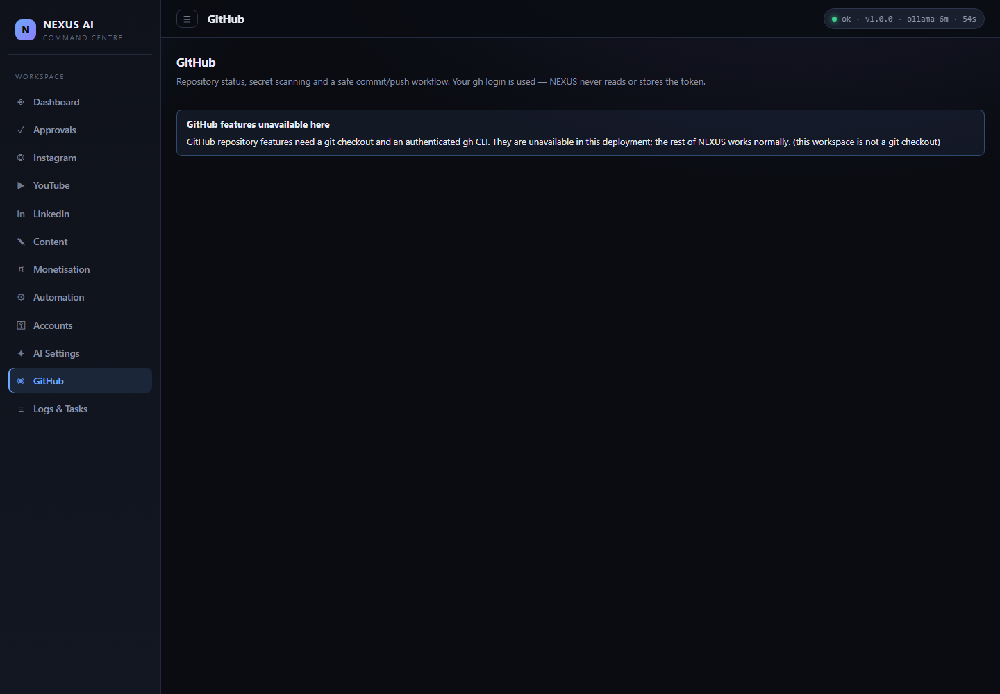

Local AI routing
One provider interface across DeepSeek, Groq, OpenRouter, Google, Ollama and a deterministic template engine. Failures cool down per class instead of hammering a provider.
Works with no keyLocal-first · No API key required
NEXUS AI is a single dashboard for content, video production, research, career tools and scheduled automation. It runs entirely on your own hardware with a local language model — and stops to ask before anything is published.
Features
Every feature below is implemented in this repository. Items needing a third-party account are labelled — nothing is faked.
One provider interface across DeepSeek, Groq, OpenRouter, Google, Ollama and a deterministic template engine. Failures cool down per class instead of hammering a provider.
Works with no keyScene planning, FFmpeg rendering, thumbnails drawn with Pillow, SRT subtitles and optional Windows SAPI voiceover. Output is validated with ffprobe.
Works offlinePublishing, uploading, deleting, spending and messaging all require a recorded approval. Payloads are hashed and approvals are single-use.
Always onTrends from public Hacker News and Reddit JSON APIs; job discovery from RemoteOK and Remotive. Cached, attributed, never scraped.
Public APIs onlyCV builder, cover letters with a truthfulness guard that rejects invented facts, and application tracking with an explicit submit step.
Works offlineRepository status, a ten-pattern secret scan, staged-diff rescanning and a commit
and push flow that uses your existing gh login.
Profile analysis, niche research, reels ideas and captions. Live publishing needs your own Meta app; the app reports that state honestly.
Needs Meta appReal OAuth flow, upload with resumable transfer, and analytics — but only after you create a Google OAuth client. Until then the page says so.
Needs Google OAuthRevenue ledger with verified and unverified totals kept separate, plus sponsorship and freelance lead tracking. No numbers are invented.
Works offlineArchitecture
FastAPI serves both the JSON API and the built React dashboard on a single origin. SQLite holds all state. AI calls go through one router.
Vite build, HashRouter, plain CSS. Served by FastAPI from frontend/dist.
82 API routes across 9 modules · approval gate · subprocess allowlist
(ffmpeg, ffprobe, gh, git).
Ollama → optional free providers → deterministic templates.
25 tables. Single file on a mounted volume. Survives restarts.
Video, thumbnails, subtitles. Validated with ffprobe.
Screenshots
These are real screenshots of this build running in Docker, not mockups.





Install
Requires Python 3.10+ and Node 18+. Ollama is optional — without it, NEXUS uses labelled deterministic templates.
:: clone and start
git clone https://github.com/shahid0219/nexus-ai.git
cd nexus-ai
start_nexus.batThe script installs dependencies, builds the dashboard once, starts
Ollama if present, then serves http://127.0.0.1:8777. Stop with
stop_nexus.bat.
docker build -t nexus-ai .
docker run --rm -p 8777:8777 \
-v nexus-data:/app/data \
-e OLLAMA_URL=http://host.docker.internal:11434 \
--add-host=host.docker.internal:host-gateway \
nexus-aiInside a container localhost is the container, not your
PC. Point OLLAMA_URL at host.docker.internal to reach
Ollama on the Windows host.
python3 -m venv .venv && . .venv/bin/activate
pip install -r requirements.txt
(cd frontend && npm install && npm run build)
python -m uvicorn app.main:app --app-dir backend \
--host 127.0.0.1 --port 8777On Debian/Ubuntu install ffmpeg and
fonts-dejavu-core for video rendering.
NEXUS prefers a local model and falls back to templates when none is available.
ollama serve
ollama pull gemma3:1b # ~0.8 GB, fits a 4 GB GPU
ollama pull qwen2.5-coder:3b # ~1.8 GB, better qualityModels larger than NEXUS_AI_MAX_MODEL_GB (default 5.5 GB)
are never loaded, so a small GPU is not asked to swap. NEXUS does not download models
on its own.
No-key operation
These pages stay visible and report
awaiting_configuration rather than pretending to work.
When no model is reachable, generation still returns real text — but every
response carries generated_by: "fallback" and the UI shows it. NEXUS
never presents deterministic output as a model response.
Security & privacy
Binds 127.0.0.1. The container only sets 0.0.0.0 inside
Docker's own network namespace. No analytics, no telemetry, no phone-home.
Subprocesses are restricted to an allowlist — ffmpeg,
ffprobe, gh, git — always with
shell=False.
Keys live in data/credentials.json, which is gitignored and never
returned by the API. Secrets are redacted from logs before they are written.
Publishing, uploading, deleting, spending and messaging return HTTP 409 with an approval id until you approve. Approvals are hashed and single-use.
This site collects nothing. It is static HTML, CSS and JavaScript with no forms, no cookies and no third-party requests.
Every claim on this page maps to a file in the repository. The test suite, Docker build and secret scan all run in GitHub Actions on every push.